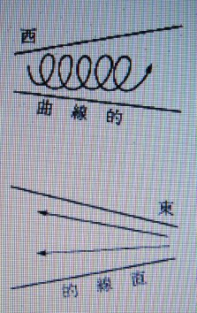

夜昼転換と国家の栄枯ついて ２
明主様御講義 「日本と外国の使命」 （昭和10年9月5日発行）
「ナザレの聖者イエス・キリストが言った「この世の終りが来る」と言った予言があるが、それは気味が悪い様だが、考えて見ると何でもないのである。
それは今日までの世界の終りのことであって、この地球上の総てが壊滅して終う事でないのである。
今までの世界は夜の世界であるから月の世界であり、月夜星の夜であったのである。
月夜は満ちたり欠けたりして、今まで過して来たので、皎々（こうこう）と照ったり暗くなったりする。
その又晴の夜に星がピカピカ光っている。
この晴れの夜を星の世界と言うのである。
物騒な戦乱の世があるかと思えば平和の時代もある。
この様な現象は月の働きである。
一年の内でも一時は非常に良かったと思うと、又とても悪い時もある。
欧州大戦争の大景気の下り坂は大正九年三月十五日であって、株式が暴落したのである。
そのきっかけとなったのは三月十五日の満月にあたった日で、月が満ちた時で、あの好景気も絶頂であったのだ。
月の世界とは外国の世界ということである。
月とは「尽き」となり、「尽の世の事」、「尽たる世界」日本は日の本といい外国は月の国となる。
英国は月の国米国は星の国であるから夜の世界である。
英国にとって最も重要なる国である印度は「月氏国」といい、この印度を取ったから英国が月の国の代表者となって今までの欧州文明時代に対する覇者の位置に立つ事が出来たのである。
夜の世界が済めば月の国、星の国は日の国に頭を下げねばならん事は当然である。
今日までの世界は皆夜の文明であったのである。その為に今日までの文化では人を救う事は出来なかったのである。
なぜならば、宗教も夜の宗教である為、本当に救われなかったのである。
これは絶対に救われなかったと断言して憚（はばか）らないのである。
その故は三代も五代も何の災難もなく長生して病気もなく失敗もなく続き、不幸や災難のなかった家が一軒も無かったと断言出来るからである。
宗教で救ったとしたらばそういう家が相当に無ければ成らんがこれがないのである。
これを以てしても間違った宗教である。キリストの予言したのは夜の世界の終りと言う事である。
宗教も今まで大過なく来たのは矢張り宗教の御蔭である。
キリストの予言したのは立派であった。
この予言はこの説明通り観音様が世に出られて決算するので的中するのである。
日の本というからには、いつか日の出る事に成るのである。
又日本から昼の文明が生れ出て、今までの夜の文明と結ばれるのであるから、初めて光明世界となるのである。
光明世界とは昼の文明である。日本の文明である。日の文明ともなる。
即光の世界となるので、これが光明世界となるのである。
大光明世界とは大は五大州の事であるから、全世界が光の文化、日月合した文明となるのである。
大光明世界を建設することは昔から解っていたのである。日とは○丶を直（なお）した字で、中の点は太陽の黒点である。
太陽の黒点ある事は非常に深い意味がある。統一したのである。スである。（中略）
日本文化が世界に拡がらねば世界統一にはならんのである。
大日本とは実に意味の深い言葉である。我日本は欧州大戦前は五大国の一であったが今は三大国になった。
今始めかけている日本の国策は、日本が一大強国となる準備である。
日本は日であり、世界各国は一つ一つ星であるからである。
日本が益々発展するのは日が中天さしてグングン昇って行く事である。
朝鮮や満州が手に入ったのも日が出たからである。
今度は中国へ手が出る様になるのであるが、これを止める事は絶対に不可能な事である。
なぜならば日の中天さして昇るのをいかに権勢の人が止めようとしても、止め得るものではないのである。
中国へ日本が手を延ばす事はこの意味であり、追々全世界はこの様にして順次統一されて行くのである。
昔平清盛が日を招いたという事があるが、到底及ぶ所ではないのである。
日本は世界の祖国である。
大和島根（やまとしまね）とは大に和する大和合、大調和の意味である。
今世界のあらゆるものを調和するのである。大和とは矢的となり、○丶である。秋津島根とはアキツとは蜻蛉（とんぼ）の事である。
蝶々（女）蜻蛉（男）、島根とは五大州の元であるという事である。
根は元である。根本根元である。
豊葦原瑞穂（とよあしはらのみずほ）の国とは、神代の時代に葦が生えていた。豊はユタカ沢山の意味である。中津国とは中心であって、日本国の事である。
秀妻（ほずま）の国は少し意味があるが、後にお知らせする時が来る。
皇御国（すめらみくに）、東方の君子国、日出る国、大和日高見国、心安（うらやす）国、豊秋津根別国、言霊の幸う国等沢山の名がある。
これらは今余り必要はない。
日本は治者である。外国は被治者となるのである。
これは何も日本に野心があってつけたのではなく、どうしてもこの様にならねばならんのである。
日本 天照皇大神（あまてらすすめおはみかみ）真
朝鮮 素盞嗚尊（すさのをのみこと） 悪（ユダヤの祖、マッソン、イエス）
（フリーメーソン）
中国 盤古神王（ばんこしんわう） 善（釈迦、マホメット、孔子）
善の盤古の末が亡び、悪の世界の西洋（素盞嗚尊の後のユダヤ、マッソン、イエスは皆西洋である）思想が流行したのである。
今までは死を本当に知らなかったから、悪を平気でやっていたのである。
悪をやっているのか善をやっているのか少しも解らずにやっている。
その為偽りが多く、虚偽が非常に発達したのは、善を行っている様に見せかけて悪をやるという訳で、実にずるいやり方であったが、世間ではこれを知らなかったのである。
今までの人は実に気の毒であった。
日本と外国とはほとんど反対である。
今までの称えた日本精心は神の日本精神ではない。
バラモンから出た所の精神であった。
真の日本精神は大調和の精神である。常軌を逸した様な事や、人の目にいかにも善の様に見えても、皆日本魂と今まで言ったのは違うのだ。
一方に偏するのは日本精神ではない。
日本は太陽の国である。太陽は白色であって、白は色々な色になる。
色々な色とは各国の事である。独逸（ドイツ）がナチス、伊太利（イタリア）がファッショ、露西亜（ロシア）が共産主義と言った様な訳である。
日本はこの各国の色を取入れて白く光るのである。
ファッショでも共産主義でも一色だけでは駄目である。
英国は代議政体である。英国は紫である。
米国は黄、伊太利は黒、仏は褐色、露は赤色と云う様なもので、日本は色々なものを取り入れて立派なものに仕上げるのである。
日本は求心的で、☉である。富士山で言うと真中が日本である。
それは頂上から見れば

である。
本、

西、横から見れば極東又東である。麓は西となる。
日本の文化は求心的であり、西から出来て来たものは荒ごなしで仕上げがしてないのである。
これは遠心的であって、仕上げて西へ又逆輸出するのが日本の今後の仕事である。
今までの状態は西より東へ来たが、これが九分九厘である。
今度は東から西へ太陽の光りで一遍に照して終うのである。
これが直線的であるが、悪の文化とは曲線的であって（曲）はまがである。
今まで何千年もかゝったのを今度は一度に早く直線的にやってしまう。
これが真である。
今までの世界各国は部分品を作っていたのであるから完成していない。
フォードの部分品は工場で造るのであってフォード本社は工場等なくて各工場で部分品を取り集めて一つの自動車を作っているのである。

西 洋
個人主義―獣（音声）―物質的―仏―権利―濃厚
石―水―右―仏・女主―博愛―弱肉強食―言論機関・印刷物等
人君―人立―覇道―人道―人為的―平等―自由的
日 本
家族主義―和―鳥（音声）―神霊的―神である・心を主とする―義務―淡白。
木―火―左―神・男主―忠孝－共存共栄―言挙（ことあげ）せぬ国。
神君―天立―皇道―神道―自然惟神―階級制度―規律的。
この何も彼も片寄らず調和したのが、今後の文明即ち日本文明なのである。
これが真である。これを見ても皇道は余程考えねばならぬのである。
皇道の皇の字はノ○丶と王との三つより成り立って居ります。「ノ」は天より降る有様であって○丶は日であり、王である。
即ち天より降られた日の王である。天より降った皇である。
天降りの天皇の御道であって、道とは行（や）り方、方法、すべき事、自らの道ありとて非常に広い意義の深い字で首へしんにゅうをかける程重大な事である。
三千（みち）とは体霊（みち）となり、観音様の事ともなるのである。
故に皇道とは、天皇陛下の御道であり、人民がとやかく言うのは間違っている。
人民が口にすべきではない。
人民が言わんとすれば、皇民道とも言うべきである。
その故は人民は被治者であるからである。
人民は人民道と言うべきである。
皇道とは上御一人の道である。
我々が口にするさえ恐れ多い訳である。
我々は被治者であるから、いかに治められるか、我々はいかにして最善を尽すかとまでは言うことが出来るのであるが、この上は言う事は出来ぬのである。
日本は日月の文明である。
皇太子殿下の御名、明仁親王と申上げる御名も今後出来上る世の中の為に御付け遊ばされると拝察申上げるのである。
日本精神とは何んであるかというと、昔から神道で言う四魂が完全に調和すれば良いのである。
四 魂
荒魂（アラミタマ）・・・勇
和魂（ニギミタマ）・・・親
奇魂（クシミタマ）・・・智
幸魂（サチミタマ）・・・愛
この四魂の調和した働きを伊都能売の働きと言い、観音行であるのだ。
これを最もよく表わしたのが明治天皇の降し給える教育勅語の御精神通りに人間の行をする様に成ってこそ初めて人間であるのだ。
今までは人の皮着た獣であった人が多かったのである。
なぜならば人として尽すべき道を実行していなかった人が余り多過ぎたからである。
少なくとも日本人はその様な者にならんのだ。まず観音会から見本を示してこれを日本中に押し拡げ、又世界中に拡げねばならんのである。
これにより真の世界が開けるのである。
世人は今まで「人は病の器」なんぞと間違った事を言った。
「人は健康の器」であって皆そこ進行くのである。」 （「観音講座 第六講座」より）